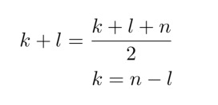

Lab 8
In this lab, you will study an essential part of your skill set as a programmer: the ability to trace the execution of a program by printing out data ”on the fly” and use these traces for debugging.
Let's start by creating a new Eclipse class to work on this lab. You can follow what we did on Lab 1 or Lab 2 to do this. Make sure to call it lab8. You should end up with this:

To get started lets make a new class called "ResizingQueue". Your project should look like this now:

Now the folowing code inside the public class ResizingQueue { in the project we just created:
private final int INITIAL_SIZE = 10;
private int [] A = new int[INITIAL_SIZE]; // array to hold queue: front is always at Q[0]
// and rear at A[next-1]
int next = 0; // location of next available unused slot
// interface methods
public void enqueue(int key) { // push the key onto the back of the queue
// YOUR CODE HERE!
}
private void resize() {
// YOUR CODE HERE!
}
public int dequeue() { // remove the top integer and return it -- will cause error if empty!
//YOUR CODE HERE!
}
public boolean isEmpty() {
return (next == 0);
}
public int size() { // how many integers in the queue
return next;
}
public String toString() {
String s = "[";
for(int i = 0; i < A.length; ++i) {
if(i == next)
s += " | " + A[i];
else if(i == 0)
s += A[i];
else
s += ", " + A[i];
}
s += "]";
return s;
}Now copy the following into your main function of lab8:
ResizingQueue Q = new ResizingQueue();
System.out.println("\nTesting toString on empty queue....");
System.out.println("\n[1] Should be:\n[ | 0, 0, 0, 0, 0, 0, 0, 0, 0, 0]\tnext = 0");
System.out.println(Q + "\tnext = 0");
System.out.println("\nTesting size and isEmpty() on empty queue....");
System.out.println("\n[2] Should be:\n0\ttrue");
System.out.println(Q.size() + "\t" + Q.isEmpty());
// UNCOMMENT THIS CODE TO TEST YOUR FUNCTIONS ENQUEUE, DEQUEUE, and RESIZE
/*
System.out.println("\nTesting enqueue...");
Q.enqueue(3);
Q.enqueue(5);
Q.enqueue(7);
System.out.println("\n[3] Should be:\n[3, 5, 7 | 0, 0, 0, 0, 0, 0, 0]\tnext = 3");
System.out.println(Q + "\tnext = " + Q.next);
System.out.println("\nTesting size and isEmpty on non-empty queue....");
System.out.println("\n[4] Should be:\n3\tfalse");
System.out.println(Q.size() + "\t" + Q.isEmpty());
System.out.println("\nTesting dequeue...");
int n = Q.dequeue();
System.out.println("\n[5] Should be:\n[5, 7 | 7, 0, 0, 0, 0, 0, 0, 0]\tnext = 2\tQ.dequeue() => 3");
System.out.println(Q + "\tnext = " + Q.next + "\tQ.dequeue() => " + n);
n = Q.dequeue();
n = Q.dequeue();
System.out.println("\n[6] Should be:\n[ | 7, 7, 7, 0, 0, 0, 0, 0, 0, 0]\tnext = 0\tQ.dequeue() => 7");
System.out.println(Q + "\tnext = " + Q.next + "\tQ.dequeue() => " + n);
System.out.println("\nTesting resizing...");
for(int i = 10; i <= 25; ++i)
Q.enqueue(i);
System.out.println("\n[7] Should be:\n[10, 11, 12, 13, 14, 15, 16, 17, 18, 19, 20, 21, 22, 23, 24, 25 | 0, 0, 0, 0]");
System.out.println(Q);
for(int i = 0; i < 13; ++i)
Q.dequeue();
System.out.println("\n[8] Should be:\n[23, 24, 25 | 25, 25, 25, 25, 25, 25, 25, 25, 25, 25, 25, 25, 25, 0, 0, 0, 0]");
System.out.println(Q);
*/

Naive Queue Implementation
To begin, you are going to create a queue ADT which solves the problem presented in lecture (that you run off the end of the array) by simply shifting all the data over, similar to what happens in a real line at Starbucks: when the person at the head of the line leaves with her coffee, the whole line moves up. We will store the queue in an array A, with the head of the queue at A[0], and the rear at A[next-1], thus a queue containing 3 and 5 with 3 at the head and 5 at the rear would look like this (assuming the length of the array is 10):

When we enqueue a 7, we insert it at the end and move next, as usual:
When we dequeue, we first save the 3, which is at the head in a temporary variable, and then move everything over one slot to the left and decrement next.

Finally we return the 3 as the result of the method. Note that we do NOT need to remove the 7, e.g., by replacing it by 0, as the next time we enqueue it will be overwritten.
Step-Wise Refinement
Now we get to the point of the whole lab: complete the implementation of the starter code so that the Unit Test verifies that all works as required. However, you MUST do it incrementally, in the following way:
- Bbserve that much of what you need is already in place, and especially, it passes the first test with flying colors. So far so good!
- Comment-in the next performance test, and ONLY the next one. That is, from

you should next go to:

This should work perfectly too! Now comment-in test [3] and test it. It will fail. Implementenqueue(...)and get this test to work. Do ONLY as much as necessary to get this test to work, and resist the temptation to start filling in the rest. - Now proceed through the rest of the unit test, writing your code incrementally, one method at a time. Note that array resizing is done last. This is explained in the next section.
Array Resizing
A very common problem with array-based data structures is running out of room: the array fills up and there is no more room for new data! Fortunately, the solution is very simple: just allocate a new, bigger array, and transfer all the data over. The only trick is that you have to substitute the new array for the old one, but this is quite simple. The method stub resize() in the starter code can be described in pseudo-code as follows:
//This method resizes an array A to twice as big:
private void resize() {
– create a new array B twice as big as A
– transfer everything from A over to the same slots in B (i.e., A[0] goes to B[0], A[1] to B[1], etc.)
– A = B; // assign the object named by B to the name A; since A and B are references, you can do this!
}The last line in the method is important: since A and B are references, you can simply rename the new array B with the name A, and now A is magically twice as big with the same data. In the template code, I have commented out “A = B”; so that it will compile, but this is the Java statement that does the renaming
Testing your work
If all goes well you should end up with this:

Make sure to mark your attendance here before leaving!